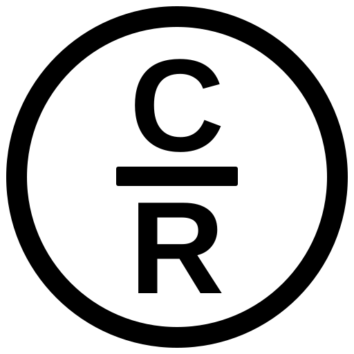

CELEBRATE RECOVERY · YUBA CITY
Volunteer With Us
Fill this out to let our leadership team know you're interested in serving.
✓
Registration received!
Thank you for your interest in serving with Celebrate Recovery Yuba City. Your registration has been sent to our leadership team for review.
Once approved, you'll be added to the volunteer system and can be scheduled with the teams you selected.